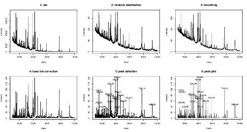
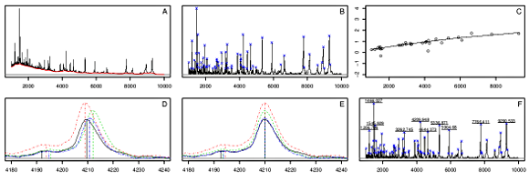

MALDIquant: Quantitative Analysis of Mass Spectrometry Data

MALDIquant provides a complete analysis pipeline for MALDI-TOF and other mass spectrometry data. Distinctive features include baseline subtraction methods such as TopHat or SNIP, peak alignment using warping functions, handling of replicated measurements as well as allowing spectra with different resolutions.
The MALDIquant pipeline consists of two main R packages:
- MALDIquant contains the base functionality for processing mass spectrometry data.
- MALDIquantForeign contains routines for importing and exporting data.
Additionally,
- MALDIquantExamples provides examples of real case studies using MALDIquant.
All softwares are licensed under the GNU GPL version 3 (or any later version).
Author: Sebastian Gibb.
Example R Code:
To illustrate the application of MALDIquant for analyzis of mass spectrometry data please find below a number of example R scripts:
Demos contained in MALDIquant package:
- Overview over MALDIquant mass spectrometry analysis pipeline - vignette (PDF) .
- Example workflow with multiple spectra and alignment - demo R code.
-
Preprocessing and peak detection example for a single
spectrum -
demo R code:

(click on image to enlarge). - Comparison of different baseline corrections - demo R code.
- Illustration of peak alignment by warping - demo R code.
{kind=link}
Examples from MALDIquantForeign:
- Overview over functions for data import - vignette (PDF).
Examples contained in MALDIquantExamples:
- Imaging mass spectrometry (IMS) example (import of imzML data and image display) - see the vignette (PDF) and corresponding R code.
- Example analysis of Fiedler et al. (2009) pancreas cancer data (including peak filtering, feature selection and classification) - see the vignette (PDF) and corresponding R code.
- Example cluster analysis of 96 MALDI-TOF mass spectra of four different bacteria species (incl. peak selection) - see the vignette (PDF) and corresponding R code.
Installation:
For installing the two main packages simply enter at the R console:
install.packages(c("MALDIquant", "MALDIquantForeign"))
install.packages("devtools")
For MALDIquantExamples you need to use the devtools R package:
library("devtools")
install_github("sgibb/MALDIquantExamples")
Note that you can run the examples provided in MALDIquantExamples also without installing the actual package (see above).
Documentation:
The MALDIquant R package offers the core functions for mass spectrometry analysis, including base classes, plotting, base-line correction, peak identification, alignment etc.
The current version of MALDIquant is 1.11 (published August 2014) :
- Release history.
- Manual and vignette (pdf files).
- Download of MALDIquant version 1.11 source package.
- Archive of previous versions of MALDIquant.
The MALDIquantForeign package provides additional functions for reading (tab, csv, fid, mzXML, mzML, imzML, Analyze 7.5) and writing common file formats for mass spectrometry data into/from MALDIquant objects.
The current version of MALDIquantForeign is 0.9 (published August 2014):
- Release history.
- Manual and vignette (pdf files).
- Download of MALDIquantForeign version 0.9 source package.
- Archive of previous versions of MALDIquantForeign.
- Associated R packages for data import: readBrukerFlexData and readMzXmlData.
Reference Publication:
- Please cite this paper if you use MALDIquant:
S. Gibb and K. Strimmer. 2012. MALDIquant: a versatile R package for the analysis of mass spectrometry data. Bioinformatics 28: 2270-2271 (arXiv:1203.5885) - R code to reproduce Figure 1 (color version).

(click on image to enlarge).
{kind=link}
Further material:
- Talk at the 29th European Meeting of Statisticians (Budapest July 2013): Quantitative Analysis of Proteomics Mass Spectrometry Data (size of PDF: 3.5 MB) .
- S. Gibb and K. Strimmer. 2011. Analysis of proteomic data using MALDIquant. Proceedings of the 8th International Workshop on Computational Systems Biology, WCSB 2011 (June 6-8, 2011, Zurich, Switzerland), pp. 49-52.
Related Software:
The MALDIquant and MALDIquantForeign packages are part of the Bioconductor RforProteomics analysis pipeline developed by Laurent Gatto.
The Mass-Up software developed at the University of Vigo uses some functions of MALDIquant.
See also our list of open source tools for mass spectrometry analysis (mostly in R).
Back to software page.